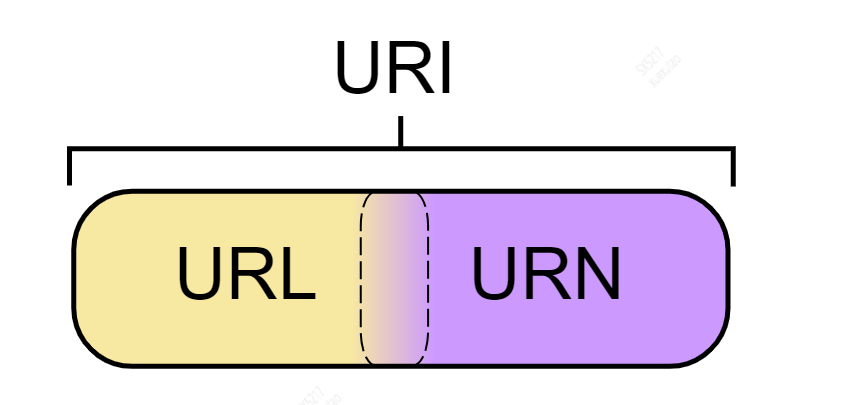

HTTP
一、URL
HTTP 使用 URL（ U niform Resource Locator，统一资源定位符）来定位资源，它是 URI（Uniform Resource Identifier，统一资源标识符）的子集，URL 在 URI 的基础上增加了定位能力。URI 除了包含 URL，还包含 URN（Uniform Resource Name，统一资源名称），它只是用来定义一个资源的名称，并不具备定位该资源的能力。例如 urn:isbn:0451450523 用来定义一个书籍名称，但是却没有表示怎么找到这本书。

二、HTTP状态码
| 状态码 | 类别 | 含义 |
|---|---|---|
| 1XX | Informational（信息性状态码） | 接收的请求正在处理 |
| 2XX | Success（成功状态码） | 请求正常处理完毕 |
| 3XX | Redirection（重定向状态码） | 需要进行附加操作以完成请求 |
| 4XX | Client Error（客户端错误状态码） | 服务器无法处理请求 |
| 5XX | Server Error（服务器错误状态码） | 服务器处理请求出错 |
1xx 信息
- 100 Continue ：表明到目前为止都很正常，客户端可以继续发送请求或者忽略这个响应。
2xx 成功
- 200 OK
- 204 No Content ：请求已经成功处理，但是返回的响应报文不包含实体的主体部分。一般在只需要从客户端往服务器发送信息，而不需要返回数据时使用。
- 206 Partial Content ：表示客户端进行了范围请求，响应报文包含由 Content-Range 指定范围的实体内容。
3xx 重定向
- 301 Moved Permanently ：永久性重定向
- 302 Found ：临时性重定向
- 303 See Other ：和 302 有着相同的功能，但是 303 明确要求客户端应该采用 GET 方法获取资源。
- 注：虽然 HTTP 协议规定 301、302 状态下重定向时不允许把 POST 方法改成 GET 方法，但是大多数浏览器都会在 301、302 和 303 状态下的重定向把 POST 方法改成 GET 方法。
- 304 Not Modified ：如果请求报文首部包含一些条件，例如：If-Match，If-Modified-Since，If-None-Match，If-Range，If-Unmodified-Since，如果不满足条件，则服务器会返回 304 状态码。
- 307 Temporary Redirect ：临时重定向，与 302 的含义类似，但是 307 要求浏览器不会把重定向请求的 POST 方法改成 GET 方法。
4xx 客户端错误
- 400 Bad Request ：请求报文中存在语法错误。
- 401 Unauthorized ：该状态码表示发送的请求需要有认证信息（BASIC 认证、DIGEST 认证）。如果之前已进行过一次请求，则表示用户认证失败。
- 403 Forbidden ：请求被拒绝。
- 404 Not Found
5xx 服务器错误
- 500 Internal Server Error ：服务器正在执行请求时发生错误。
- 503 Service Unavailable ：服务器暂时处于超负载或正在进行停机维护，现在无法处理请求。
三、应用
1. 连接管理
短连接与长连接
当浏览器访问一个包含多张图片的 HTML 页面时，除了请求访问的 HTML 页面资源，还会请求图片资源。如果每进行一次 HTTP 通信就要新建一个 TCP 连接，那么开销会很大。
长连接只需要建立一次 TCP 连接就能进行多次 HTTP 通信。
- 从 HTTP/1.1 开始默认是长连接的，如果要断开连接，需要由客户端或者服务器端提出断开，使用
Connection : close； - 在 HTTP/1.1 之前默认是短连接的，如果需要使用长连接，则使用
Connection : Keep-Alive。
流水线
默认情况下，HTTP 请求是按顺序发出的，下一个请求只有在当前请求收到响应之后才会被发出。由于受到网络延迟和带宽的限制，在下一个请求被发送到服务器之前，可能需要等待很长时间。
流水线是在同一条长连接上连续发出请求，而不用等待响应返回，这样可以减少延迟。
2. Cookie
HTTP 协议是无状态的，主要是为了让 HTTP 协议尽可能简单，使得它能够处理大量事务。HTTP/1.1 引入 Cookie 来保存状态信息。
Cookie 是服务器发送到用户浏览器并保存在本地的一小块数据，它会在浏览器向同一服务器再次发起请求时被携带上，用于告知服务端两个请求是否来自同一浏览器。由于之后每次请求都会需要携带 Cookie 数据，因此会带来额外的性能开销（尤其是在移动环境下）。
Cookie 曾一度用于客户端数据的存储，因为当时并没有其它合适的存储办法而作为唯一的存储手段，但现在随着现代浏览器开始支持各种各样的存储方式，Cookie 渐渐被淘汰。新的浏览器 API 已经允许开发者直接将数据存储到本地，如使用 Web storage API（本地存储和会话存储）或 IndexedDB
用途
- 会话状态管理（如用户登录状态、购物车、游戏分数或其它需要记录的信息）
- 个性化设置（如用户自定义设置、主题等）
- 浏览器行为跟踪（如跟踪分析用户行为等）
eg:
服务端--> 客户端（响应报文）
1 | HTTP/1.0 200 OK |
客户端-->
1 | GET /sample_page.html HTTP/1.1 |
分类
- 会话期 Cookie：浏览器关闭之后它会被自动删除，仅在会话期内有效。
- 持久性 Cookie：指定过期时间（Expires）或有效期（max-age）之后就成为了持久性的 Cookie。
1 | Set-Cookie: id=a3fWa; Expires=Wed, 21 Oct 2015 07:28:00 GMT; |
作用域
Domain 标识指定了哪些主机可以接受 Cookie。如果不指定，默认为当前文档的主机（不包含子域名）。如果指定了 Domain，则一般包含子域名。例如，如果设置 Domain=mozilla.org，则 Cookie 也包含在子域名中（如 developer.mozilla.org）。
Path 标识指定了主机下的哪些路径可以接受 Cookie（该 URL 路径必须存在于请求 URL 中）。以字符 %x2F (“/“) 作为路径分隔符，子路径也会被匹配。例如，设置 Path=/docs，则以下地址都会匹配：
- /docs
- /docs/Web/
- /docs/Web/HTTP
HttpOnly
标记为 HttpOnly 的 Cookie 不能被 JavaScript 脚本调用。跨站脚本攻击 (XSS) 常常使用 JavaScript 的 document.cookie API 窃取用户的 Cookie 信息，因此使用 HttpOnly 标记可以在一定程度上避免 XSS 攻击。
1 | Set-Cookie: id=a3fWa; Expires=Wed, 21 Oct 2015 07:28:00 GMT; Secure; HttpOnly |
Secure
标记为 Secure 的 Cookie 只能通过被 HTTPS 协议加密过的请求发送给服务端。但即便设置了 Secure 标记，敏感信息也不应该通过 Cookie 传输，因为 Cookie 有其固有的不安全性，Secure 标记也无法提供确实的安全保障。
3. Session
除了可以将用户信息通过 Cookie 存储在用户浏览器中，也可以利用 Session 存储在服务器端，存储在服务器端的信息更加安全。
Session 可以存储在服务器上的文件、数据库或者内存中。也可以将 Session 存储在 Redis 这种内存型数据库中，效率会更高。
使用 Session 维护用户登录状态的过程如下：
- 用户进行登录时，用户提交包含用户名和密码的表单，放入 HTTP 请求报文中；
- 服务器验证该用户名和密码，如果正确则把用户信息存储到 Redis 中，它在 Redis 中的 Key 称为
Session ID； - 服务器返回的响应报文的 Set-Cookie 首部字段包含了这个 Session ID，客户端收到响应报文之后将该 Cookie 值存入浏览器中；
- 客户端之后对同一个服务器进行请求时会包含该 Cookie 值，服务器收到之后提取出 Session ID，从 Redis 中取出用户信息，继续之前的业务操作。
应该注意 Session ID 的安全性问题，不能让它被恶意攻击者轻易获取，那么就不能产生一个容易被猜到的 Session ID 值。此外，还需要经常重新生成 Session ID。在对安全性要求极高的场景下，例如转账等操作，除了使用 Session 管理用户状态之外，还需要对用户进行重新验证，比如重新输入密码，或者使用短信验证码等方式。
Cookie和Session
- Cookie 只能存储 ASCII 码字符串，而 Session 则可以存储任何类型的数据，因此在考虑
数据复杂性时首选 Session； - Cookie 存储在浏览器中，容易被恶意查看。如果非要将一些隐私数据存在 Cookie 中，可以将 Cookie 值进行加密，然后在服务器进行解密；
- 对于大型网站，如果用户所有的信息都存储在 Session 中，那么
开销是非常大的，因此不建议将所有的用户信息都存储到 Session 中
4. 缓存 Cache-Control
- 让代理服务器进行缓存
- 让客户端浏览器进行缓存
HTTP/1.1 通过 Cache-Control 首部字段来控制缓存。
禁止进行缓存
no-store 指令规定不能对请求或响应的任何一部分进行缓存。
1 | Cache-Control: no-store |
强制确认缓存
no-cache 指令规定缓存服务器需要先向源服务器验证缓存资源的有效性，只有当缓存资源有效时才能使用该缓存对客户端的请求进行响应。
1 | Cache-Control: no-cache |
私有缓存和公共缓存
private 指令规定了将资源作为私有缓存，只能被单独用户使用，一般存储在用户浏览器中。
public 指令规定了将资源作为公共缓存，可以被多个用户使用，一般存储在代理服务器中。
1 | Cache-Control: private / public |
缓存过期机制
max-age 指令出现在
请求报文，并且缓存资源的缓存时间小于该指令指定的时间，那么就能接受该缓存。max-age 指令出现在
响应报文，表示缓存资源在缓存服务器中保存的时间。
1 | Cache-Control: max-age=31536000 |
Expires 首部字段也可以用于告知缓存服务器该资源什么时候会过期。
1 | Expires: Wed, 04 Jul 2023 08:26:05 GMT |
- 在 HTTP/1.1 中，会优先处理 max-age 指令；
- 在 HTTP/1.0 中，max-age 指令会被忽略掉。
四、HTTPS
HTTP 有以下安全性问题：
- 使用明文进行通信，内容可能会被窃听；
- 不验证通信方的身份，通信方的身份有可能遭遇伪装；
- 无法证明报文的完整性，报文有可能遭篡改。
HTTPS 并不是新协议，而是让 HTTP 先和 SSL（Secure Sockets Layer）通信，再由 SSL 和 TCP 通信，也就是说 HTTPS 使用了隧道进行通信。
通过使用 SSL，HTTPS 具有了加密（防窃听）、认证（防伪装）和完整性保护（防篡改）。
- 加密
对称密钥加密（Symmetric-Key Encryption），加密和解密使用同一密钥
- 优点：运算速度快；
- 缺点：无法安全地将密钥传输给通信方。
非对称密钥加密，又称公开密钥加密（Public-Key Encryption），加密和解密使用不同的密钥
公开密钥所有人都可以获得，通信发送方获得接收方的公开密钥之后，就可以使用公开密钥进行加密，接收方收到通信内容后使用私有密钥解密。
非对称密钥除了用来加密，还可以用来进行签名。因为私有密钥无法被其他人获取，因此通信发送方使用其私有密钥进行签名，通信接收方使用发送方的公开密钥对签名进行解密，就能判断这个签名是否正确。
- 优点：可以更安全地将公开密钥传输给通信发送方；
- 缺点：运算速度慢。
HTTPS 采用的加密方式
对称密钥加密方式的传输效率更高，但是无法安全地将密钥 Secret Key 传输给通信方。而非对称密钥加密方式可以保证传输的安全性，因此可以利用非对称密钥加密方式将 Secret Key 传输给通信方。HTTPS 采用混合的加密机制。
- 使用非对称密钥加密方式，传输对称密钥加密方式所需要的 Secret Key，从而保证安全性
- 获取到 Secret Key 后，再使用对称密钥加密方式进行通信，从而保证效率。
- 认证
通过使用 证书 来对通信方进行认证。
数字证书认证机构（CA，Certificate Authority）是客户端与服务器双方都可信赖的第三方机构。
服务器的运营人员向 CA 提出公开密钥的申请，CA 在判明提出申请者的身份之后，会对已申请的公开密钥做数字签名，然后分配这个已签名的公开密钥，并将该公开密钥放入公开密钥证书后绑定在一起。
进行 HTTPS 通信时，服务器会把证书发送给客户端。客户端取得其中的公开密钥之后，先使用数字签名进行验证，如果验证通过，就可以开始通信了。
- 完整性保护
SSL 提供报文摘要功能来进行完整性保护。
HTTP 也提供了 MD5 报文摘要功能，但不是安全的。例如报文内容被篡改之后，同时重新计算 MD5 的值，通信接收方是无法意识到发生了篡改。
HTTPS 的报文摘要功能之所以安全，是因为它结合了加密和认证这两个操作。加密之后的报文，遭到篡改之后，也很难重新计算报文摘要，因为无法轻易获取明文。
- 缺点
- 因为需要进行加密解密等过程，因此速度会更慢；
- 需要支付证书授权的高额费用
五、幂等性
安全的 HTTP 方法不会改变服务器状态，也就是说它只是可读的。
GET 方法是安全的，而 POST 却不是，因为 POST 的目的是传送实体主体内容，这个内容可能是用户上传的表单数据，上传成功之后，服务器可能把这个数据存储到数据库中，因此状态也就发生了改变。
安全的方法除了 GET 之外还有：HEAD、OPTIONS。
不安全的方法除了 POST 之外还有 PUT、DELETE。
幂等的 HTTP 方法，同样的请求被执行一次与连续执行多次的效果是一样的，服务器的状态也是一样的。所有的安全方法也都是幂等的。
在正确实现的条件下，GET，HEAD，PUT 和 DELETE 等方法都是幂等的，而 POST 方法不是。